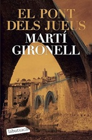
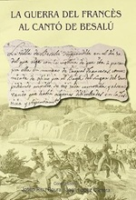
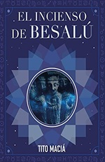

Los pueblos más bonitos
Los pueblos más bonitos

Besalú da la bienvenida a todoslos viajeros a la comarca de la Garrotxa y los transporta de golpe al medioevo. Si bien hoy día poco queda del castillo y las murallas que le rodeaban en el pasado, tan solo la entrada al pueblo a través del puente hrá ver habbrá merecido la pena visitarlo.
Este precioso pueblo medieval, además de por su arquitectura muy bien conservada, destaca por su entorno natural,único en la península ibérica. Pasear por las calles de este pueblo es como retroceder a épocas de conde y reyes.
El encanto medieval de esta localidad, ha inspirado una decena de libros y novelas, entre las cuales tenemos:
El artista de Besalú Trilogía

El Pont dels Jueus

La Guerra del Francés al canto de Besalú

El incienso de Besalú